$\renewcommand{\Diff}{\mathcal{D}}\newcommand{\dist}{\mathrm{dist}}\renewcommand{\Imm}{\mathcal{I}}\newcommand{\Shape}{\mathcal{S}}\newcommand{\R}{\mathbb{R}}\newcommand{\vol}{\operatorname{vol}}\newcommand{\Vol}{\mathrm{Vol}}\newcommand{\Var}{V}$
<h4>SVarM: Linear Support Varifold Machines for Classification<br> and Regression on Geometric Data</h4> <hr> <div class="row" style="margin-top: 100px;"> <div class="col-md-4" align="left" markdown="1"> </div> <div class="col-md-4" align="center" markdown="1"> <p><b>Emmanuel Hartman</b> and Nicolas Charon<br> University of Houston<br></p><hr><p> Cambridge Image Analysis Seminar<br> 17 September 2025</p> </div> <div class="col-md-4" align="left" markdown="1"> </div> </div> <div class="row" style="margin-top: 100px;"> <div class="col-md-4" align="left" markdown="1"> <img src="figs/nsf.png" height="120px" /> </div> <div class="col-md-4" align="center" markdown="1"> <img src="figs/cialogo_green_rounded_rectangle_website.png" height="120px" /> </div> <div class="col-md-4" align="right" markdown="1"> <img src="figs/uh_red.png" height="120px" /> </div> </div>
<h4 align="left">Shape Data and Motivation</h4><hr> <div class="col-md-8" markdown="1" align="center" vertical-align="center"><div class="row"> <div class="col-md-7" markdown="1" align="center" vertical-align="center"><div class="row"> <div class="col-md-6" markdown="1" align="center" vertical-align="center"><p>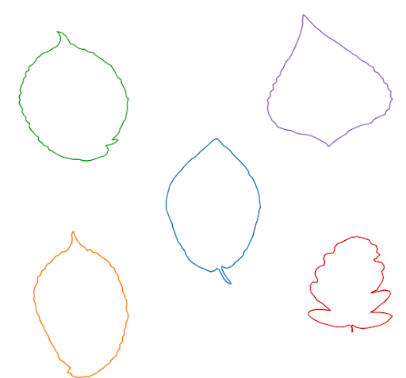</p></div> <div class="col-md-6" markdown="1" align="center" vertical-align="center"><p>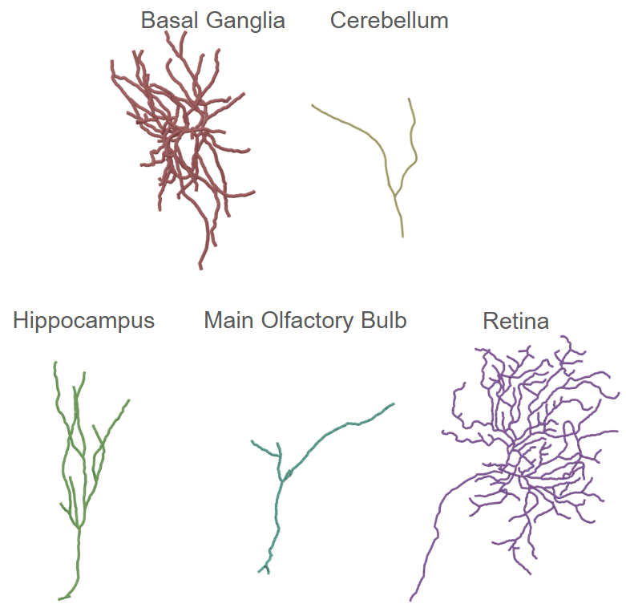</p></div> </div><div class="row"> <br><p>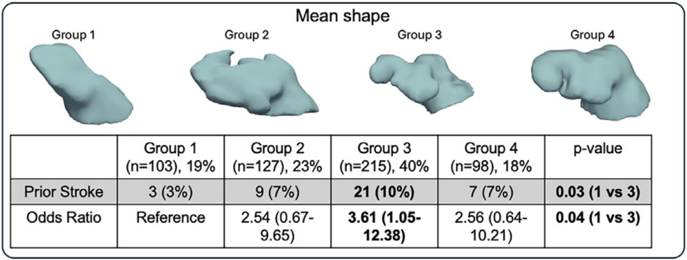</p> </div> </div> <div class="col-md-5" markdown="1" align="center" vertical-align="center"> <img src="figs/humans.png" width="100%" /> <p>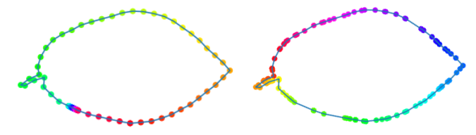</p> <p>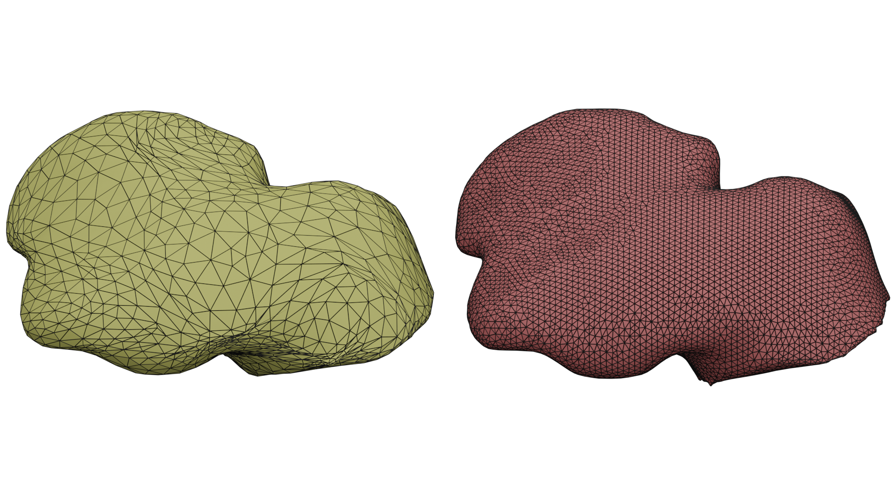</p> </div> </div></div> <div class="col-md-4" markdown="1" align="left" vertical-align="center"> <div> <p><strong>Challenges with Geometric Data:</strong></p> <ul> <li><p>Advances have led to the acquisition of more complex and detailed data.</p></li> <li><p>This has also increased the availability of larger datasets.</p></li> <li><p>Samples are high-dimensional, and multiple samples in a dataset may have different dimensions.</p></li> <li><p>Geometric data includes variability that does not change the shape of the data (e.g., sampling and reparameterization).</p></li> </ul> </p> </div> </div>
<h4 align="left">Shape Space and Parameterization Invariant Learning</h4><hr> <div class="col-md-12" markdown="1" align="left" vertical-align="center"><p>Let $M$ be a smooth oriented Riemannian manifold (i.e. circle, sphere, interval, etc).<br><br></p></div> <div class="col-md-7" markdown="1" align="left" vertical-align="center"><p> <b>Parameterized Objects :</b> bi-Lipschitz regular embedding from $M$ to $\R^3$ <br>$$\mathcal{I} := \operatorname{Emb}_{\text{Lip}}(M,\R^3)$$<br> <b>Reparameterization Group :</b> a bi-Lipschitz homeomorphism of $M$ <br>$$\mathcal{D} := \operatorname{Diff}_{\text{Lip}}(M)$$<br> <b>Shape Space:</b> We consider the space of shape as the quotient space of equivalence classes. <br>$$\mathcal{S} := \mathcal{I}/\mathcal{D}$$ $$[q]=\{q \circ \gamma: \ \gamma \in \mathcal{D}\}$$<br><br></p><div class="fragment" data-fragment-index="2"><p>How can we represent geometric data in a parameterization invariant way? </p></div></div> <div class="col-md-5" markdown="1" align="left" vertical-align="center"><br><p>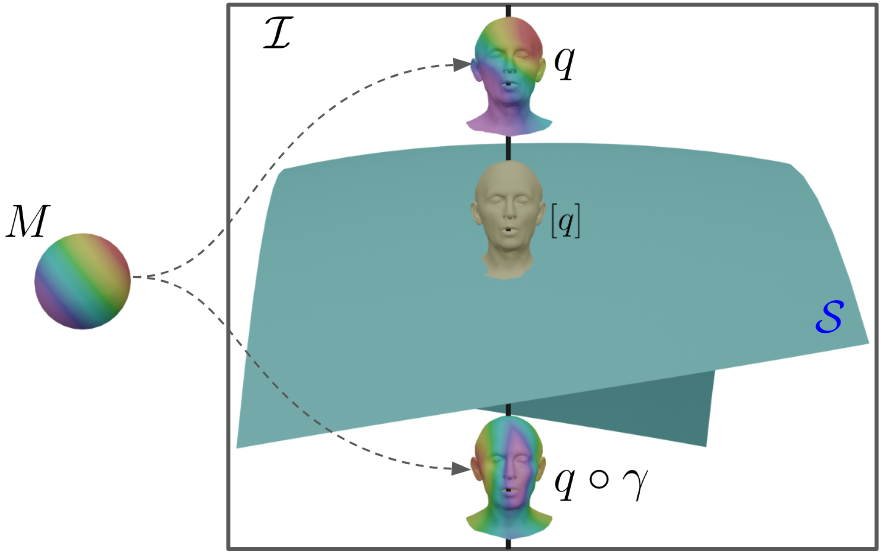</p></div>
<h4 align="left">Varifold Representations of Geometric Data</h4><hr> <div class="col-md-6" markdown="1" align="left" vertical-align="center"><p> We consider the space of varifolds, $\mathcal{V}$, given by the positive Radon measure on $\R^3 \times S^2$ where $S^2$ denotes the unit sphere.<br><br> Any $q\in \mathcal{I}$ can be canonically mapped to a varifold given by the pushforward measure $\mu_q : =(q,v_q)_*\vol_q \in \mathcal{V}$ where $v_q$ denotes the unit tangent/normal vector field and $\vol_q$ is the induced length/area measure on $M$.</p><br><br> <div class="b" align="left"><div class="bbody" align="left"><b>Theorem 1.</b> For any $q\in \mathcal{I}$ and $\gamma\in\mathcal{D}$, it holds that $ \mu_{q\circ\gamma}=\mu_q$. Consequently, one obtains a well-defined map $[q] \in \mathcal{S} \mapsto \mu_q \in \mathcal{V}$ which, in addition, is injective. </div></div><br> <p>By the Riesz-Markov-Kakutani representation theorem, $\mathcal{V}$ is the dual of $C_0(\R^3\times S^2,\R)$. The duality bracket between $\mathcal{V}$ and $C_0(\R^3 \times S^2,\R)$ is given by $$\langle \mu , h\rangle = \int_{\R^3 \times S^2} h(x,v) d\mu(x,v).$$ </p></div> <div class="col-md-6" markdown="1" align="center" vertical-align="center"><img src="figs/varifold_representations2.png" width="50%" /><br><br><p>$$\mu_q = \sum_{i=1}^ma_i \delta_{(c_i,n_i)}$$</p><br><br><img src="figs/varifold_representations.png" width="100%" /></div>
<h4 align="left"> A Support Vector Machine Approach on the space of Varifolds</h4><hr> <div class="row"> <div class="col-md-6" markdown="1" align="left" vertical-align="center"> <p>Support vector machines perform linear regression in $\R^n$ by learning the optimal $w\in \R^n,\beta\in \R$ so that $$f(v) \approx v\cdot w+\beta.$$</p> </div><div class="col-md-6" markdown="1" align="left" vertical-align="center"> <p>The SVarM model mirrors this approach by replacing vector inner products by the duality bracket and finding the optimal $h \in C_0(\mathbb{R}^3 \times S^2, \mathbb{R}), \beta \in \mathbb{R}$ so that $$f(\mu)\approx \langle\mu,h\rangle+\beta.$$</p> </div> </div> <div class="row"> <div class="col-md-6" markdown="1" align="left" vertical-align="center"> <div class="fragment" data-fragment-index="3"><p>Similarly, we can use the duality bracket to separate sets of varifolds analogously to linear seperators in the SVM approach.</p></div> <div class="fragment" data-fragment-index="5" align="center"><br><img src="figs/separator.png" width="60%" /></div> </div> <div class="col-md-6" markdown="1" align="left" vertical-align="center"> <div class="fragment" data-fragment-index="4"><div class="b" align="left"><div class="bbody" align="left"><b>Definition 1 (Separation).</b> Two disjoint sets $C_1,C_2 \subseteq \mathcal{V}$ are strictly separated by some test function $h$ when: \begin{equation} \label{eq:def_separated} \sup_{\mu\in C_1} \langle \mu,h\rangle \,<\, \inf_{\nu\in C_2} \langle \nu,h\rangle \end{equation} </div></div></div></div> </div></div>
<h4 align="left"> Existence of Separators and a counter example</h4><hr> <div class="row"> <div class="col-md-8" markdown="1" align="left" vertical-align="center"> <div class="fragment" data-fragment-index="1"><div class="b" align="left"><div class="bbody" align="left"><b>Theorem 2 (Seperators Between Disjoint Convex Sets).</b> Suppose $C_1, C_2 \subseteq \mathcal{V}$ are convex weak-* compact subsets such that $C_1\cap C_2 = \emptyset$. Then there exists a test function $h\in C_0(\R^3\times S^2,\R)$ that separates $C_1$ and $C_2$ in the sense of Definition 1. </div></div></div> </div> <div class="col-md-4" markdown="1" align="left" vertical-align="center"> <div class="fragment" data-fragment-index="2"> <p>This condition does not have a clear interpretation in the space of shapes.</p></div> </div> </div> <br> <div class="row"> <div class="col-md-8" markdown="1" align="left" vertical-align="center"> <div class="fragment" data-fragment-index="3"> <div class="b" align="left"><div class="bbody" align="left"><b>Theorem 3 (A Condition for Seperators Between Sets of Shapes).</b> Let $\Sigma_1, \Sigma_2$ be finite sets of continuous shapes in $\mathcal{I}$ such that either: <br> 1) for each $q' \in \Sigma_2$, $q'(M)\not\subseteq \bigcup_{q\in \Sigma_1} q(M)$<br> 2) for each $q \in \Sigma_1$, $q(M)\not\subseteq \bigcup_{q'\in \Sigma_2} q'(M)$.<br> Then the two sets $\Sigma_1, \Sigma_2$ are strictly separable by a test function $h \in C_0(\R^3\times S^2,\R)$. </div></div></div> <div class="fragment" data-fragment-index="4"> <p><br><br>When this condition is not met there are examples of sets of shapes which cannot be separated by a test function $h\in C_0(\R^3\times S^2,\R)$.</p> </div> </div> <div class="fragment" data-fragment-index="5"> <div class="col-md-4" markdown="1" align="left" vertical-align="center"> <p>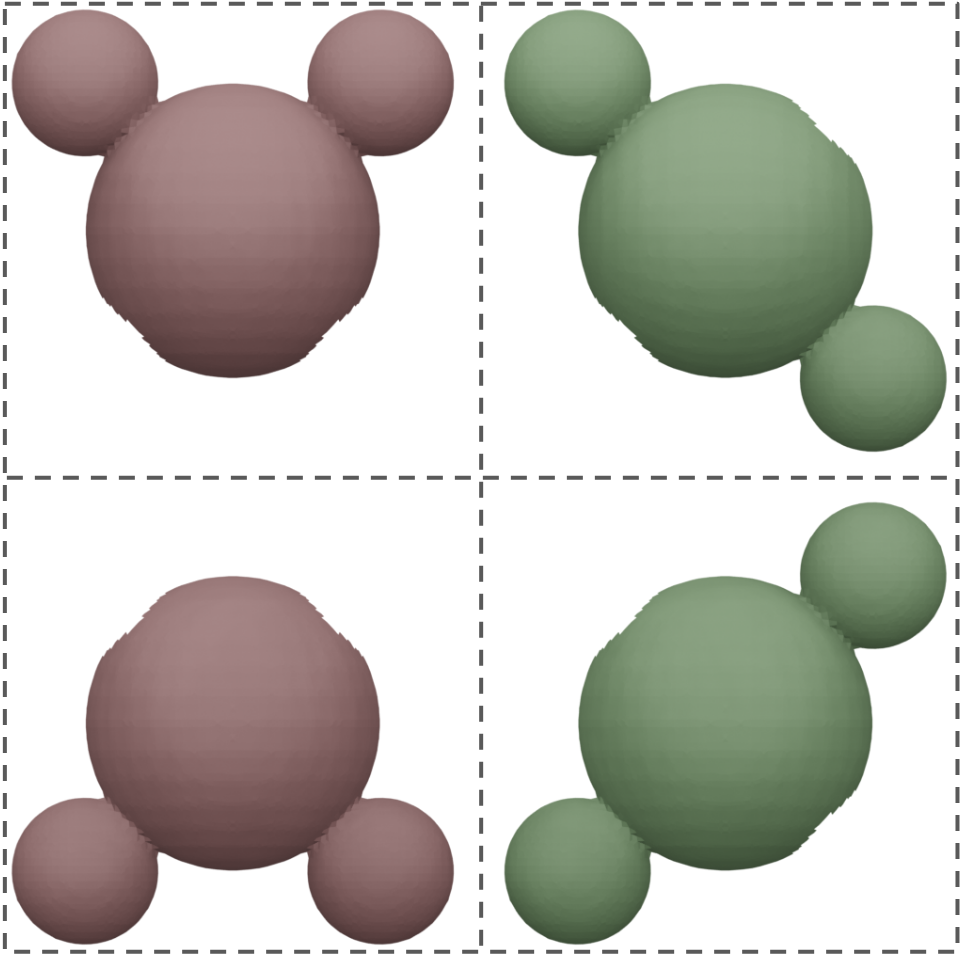</p> </div> </div> </div>
<h4 align="left"> Neural Network Model</h4><hr> <div class="col-md-12" markdown="1" align="left" vertical-align="center"><p>Given a function $f$ on a set of shapes, how can we learn a test funtion $h\in C_0(\R^3\times S^2,\R)$ and bias $\beta\in\R$ so that $$f(q)\approx\langle\mu_q,h\rangle+\beta?$$</p><br><br></div> <div class="col-md-6" markdown="1" align="left" vertical-align="center"><div class="fragment" data-fragment-index="2"><p>To learn a linear function in the space of varifolds, we approximate a test function using an MLP,<br> $h_\theta:\R^{6}\to\R$ with trainable parameters $\theta$.<br><br> To perform multi-class classification of varifolds, we modify the architecture to learn a vector valued functions $h_\theta:\R^6\to \R^c$ where $\int_{\R^3\times S^2} h_\theta \operatorname{d}\mu$ is a $c$-dimensional vector where each entry is interpreted as a logit of the probability that $\mu$ belongs to the corresponding class.</p></div></div> <div class="col-md-6" markdown="1" align="center" vertical-align="center"><div class="fragment" data-fragment-index="3"><p><p>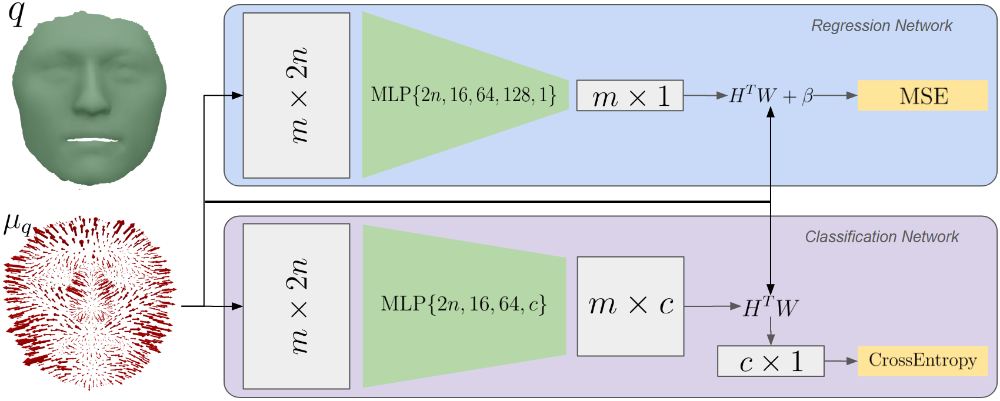</p></p></div></div>
<h4 align="left"> Regression Results</h4><hr> <div class="col-md-6" markdown="1" align="left" vertical-align="center"> <p><b>Single-Axis Rotation Regression:</b> On ~8k synthetically rotated FAUST meshes, our model accurately predicts rotation angles around a fixed axis, realigning scans with high correlation to ground truth and interpretable face-wise function values. <br><br><br><b>Full 3D Rotation Regression:</b> We extended the task to arbitrary 3D rotations (12.8k meshes with an 80 - 20 training/testing split), where the model learns to regress rotation matrices, achieving low mean geodesic error in $SO(3)$ and strong $R^2$ scores. <br><br><br><b>Comparison to Optimization Baseline:</b> Our model attains superior accuracy to direct optimization over $SO(3)$. This optimization requires ~15-30s per mesh while our trained model aligns the entire test set in <15s.</p> </div> <div class="col-md-6" markdown="1" align="left" vertical-align="center"> <div class="fragment" data-fragment-index="2"><p>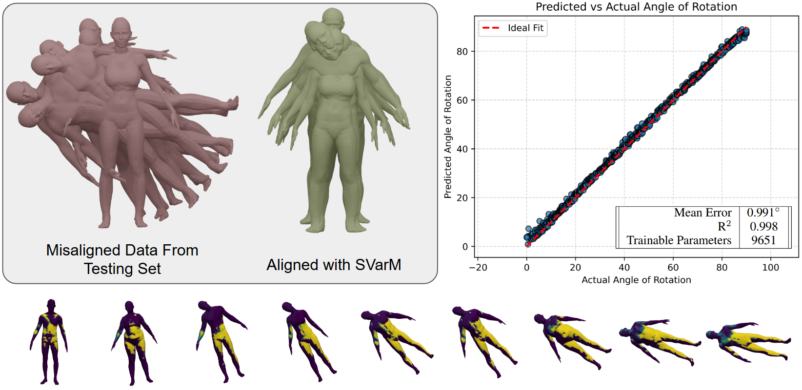</p></div><br> <div class="fragment" data-fragment-index="3"><img src="figs/Regression2.png" width="100%" /></div> </div>
<h4 align="left"> Classification Results</h4><hr> <div class="col-md-6" markdown="1" align="left" vertical-align="center"> <p><b>MNIST Surfaces:</b> Converted the full MNIST dataset into 3D height-map meshes (20 minutes preprocessing). Training used ~60k meshes with digits as labels, and testing was done on ~10k meshes. <br><br><br><b>COMA Shape Graphs:</b> Derived ~21k shape graphs from 3D facial scans of 12 identities, splitting into 80% training and 20% testing. Graphs were constructed via consistent facial landmarks connected by geodesic paths. <br><br><br><b>Efficiency vs. Accuracy:</b> Despite having $<$2k parameters, SVarM achieves 97.7% accuracy on MNIST and 99.98% on COMA, outperforming models that require significantly more parameters. </p> </div> <div class="col-md-6" markdown="1" align="left" vertical-align="center"> <div class="fragment" data-fragment-index="2"><img src="figs/MNIST_Classify.png" width="100%" /></div><br><br> <div class="fragment" data-fragment-index="3"><p>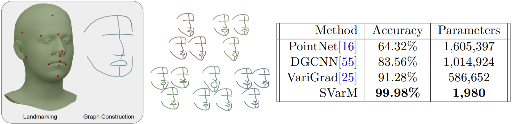</p></div> </div>
<h4 align="left">Towards Nonlinear Regressors and Classifiers</h4><hr> <div class="col-md-12" markdown="1" align="left" vertical-align="center"> <div class="b" align="left"><div class="bbody" align="left"><b>Theorem 4 (Existence of Non-Linear Approximators).</b> Let $\sigma: \R \rightarrow \R$ be a continuous non-polynomial function, $C$ a weak-* compact subset of $\mathcal{V}$ and $\psi:C \rightarrow \R$ a weak-* continuous function on $C$. Then for any $\varepsilon >0$, there exist $r \in \mathbb{N}$, $(h_k)_{k=1,\ldots,r}$ in $C_0(\R^3 \times S^2,\R)$, $(\beta_k) \in \R^r$ and $(c_k) \in \R^{r}$ such that for all $\mu \in C$: \begin{equation*} \left|\psi(\mu) - \sum_{k=1}^{r} c_k \sigma(\langle \mu, h_k \rangle + \beta_k) \right| \leq \varepsilon \end{equation*} </div></div></div> <div class="col-md-8" markdown="1" align="left" vertical-align="center"> <div class="fragment" data-fragment-index="3"><p><br><br>Define $h,\beta$ so that $\langle \mu,h \rangle+\beta$ corresponds to the number of balls on the upper half of the object and $\sigma(x)= 2^{-|x-1|^2}$, then $\sigma(\langle \mu,h \rangle+\beta)=1$ for the green surfaces while $\sigma(\langle \mu,h \rangle+\beta)=1/2$ for the red surfaces.</p></div> </div> <div class="col-md-4" markdown="1" align="left" vertical-align="center"><br> <div class="fragment" data-fragment-index="2"></div> </div>
<h4 align="left">Conclusion And Future Work</h4><hr> <p align="left"><br> We discuss learning methods for parameterization invariant functions of geometric data such as surfaces, curves, and shape graphs.<br> We propose a framework that leverages varifold representations of geometric data and their duality with $C_0(\R^3\times S^2,\R)$.<br> By approximating such functions with a standard MLP architechture, we may learn linear functions and separators akin to support vector machines in the infinite dimensional space of varifolds.<br><br></p><div class="row"> <div class="col-md-8" markdown="1" align="left"> <p class="fragment fade-left">+ Performing experiments with the framework for approximating non-linear functions and classification as described in the previous slide.<br><br> </p><br> <p class="fragment fade-left">+ Utilizing this model for latent space representations of shape data where interpolations correspond to smooth deformations of shapes.<br><br> </p><br> <p class="fragment fade-left">+ Applications to large and complex datasets where standard methods are restrictive. </p><br> <hr> <p> This talk is based on:<br><a href="https://arxiv.org/abs/2506.01189">https://arxiv.org/abs/2506.01189</a><br> The code for a Pytorch implementation SVarM model is available at:<br> <a href="https://github.com/SVarM25/SVarM">https://github.com/SVarM25/SVarM</a><br> These slides are available at:<br><a href="https://emmanuel-hartman.github.io/Talks/Slides/SVarM/talk.html.">https://emmanuel-hartman.github.io/Talks/Slides/SVarM/talk.html</a> </p> </div> <div class="col-md-4" markdown="1" align="center"> <p>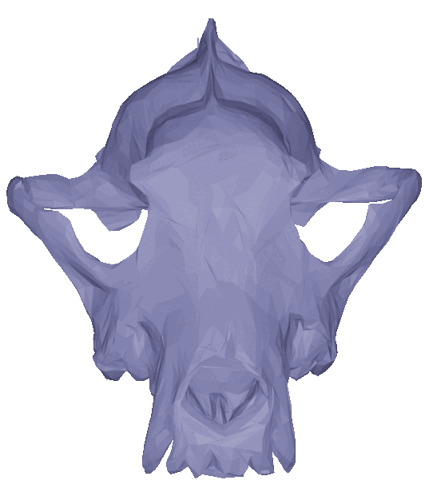</p> <br><br> <center><p>Thank you for your attention!</p></center>